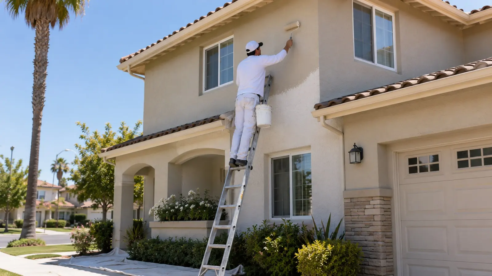
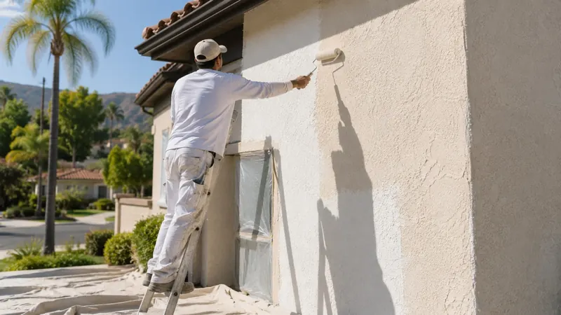
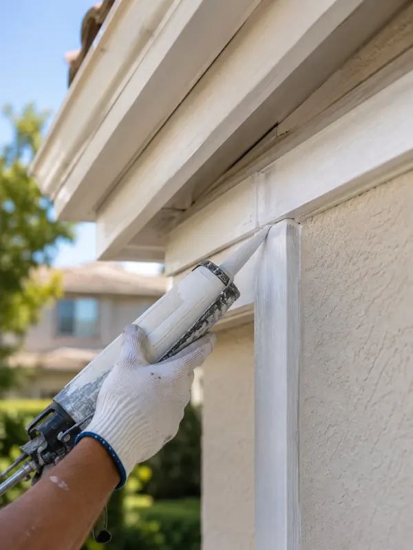

Exterior House Painting in Burbank, CA
Stucco, siding, and trim repainted by a local crew, with the washing, repairs, and priming done right and a written price before we start.
Call us today (857) 371-3693What it costs NerdWallet's 2026 national figures, citing Angi data, run $1.50 to $4 per square foot for exterior painting, with the average exterior job at $3,177 in a $1,800 to $4,500 range. Your written quote shows the real number for your home.
What we paint Stucco, wood siding, trim, fascia, and entry doors, plus stucco crack repair, wood rot replacement, and a wash before every job.
Free estimate We walk the whole exterior and hand you a written price, usually within two days of your call.
How we prep Wash, scrape, sand, patch, caulk, and prime before any paint goes on. Paint from before 1978 can contain lead, so tell us your home's age.
Local conditions NOAA's 1991 to 2020 normals count 53.9 days a year at 90°F or hotter and 7.2 at 100°F or more, and about 92% of the year's rain falls November through April, so we plan around the heat and the wet season.
Where we work Burbank, Glendale, North Hollywood, Toluca Lake, Studio City, and La Crescenta.
What We Paint Outside Your Home
Exterior painting in Burbank, CA covers the stucco, siding, trim, fascia, and doors on the outside of your house, and our crew handles every step: washing, repairs, caulking, priming, painting, and cleanup. Exterior house painting is for homeowners whose paint is chalking or peeling, sellers who want a stronger first impression, and anyone changing colors, and the result is a finish that holds up to the sun. Our home page covers the full list of services.
- Stucco. Washed, cracks patched, then primed and rolled so the texture stays even instead of patchy.
- Wood siding and trim. Scraped, sanded, spot primed, and finished with exterior-grade paint.
- Fascia, eaves, and doors. Caulked where they meet another surface to close the gaps water likes to find.
- Prep and repairs. A wash before every job, stucco crack repair, and wood rot replacement, all covered below.
How Your Exterior Painting Job Works
- Call or send the form. Tell us about the house and how soon you want it done. We call back, usually the same day.
- We walk the whole exterior. We check every wall for chalking, cracks, and peeling, probe the trim for soft spots, and look at the caulk lines. You get to talk through colors, and we can paint a test patch so you see the color in your own light.
- You get a written price. It lists the surfaces, the prep and repairs, the paint, and the cost, usually within two days of your call, with no pressure to say yes.
- We prep, paint, and clean up. We wash the house, cover plants and fixtures, make the repairs, then prime and paint. When we finish, we walk the exterior with you and touch up anything you spot.
Ready to start? Call (857) 371-3693, or use the form at the top of this page.
Get a free quoteWhat Exterior Painting Costs
Every home is different, so your written quote is the only number that counts. These national averages give you a starting point for comparing bids.
- $1.50 to $4 per square foot, professional exterior painting
- $3,177 average exterior painting job
- $1,800 to $4,500 typical range for an exterior job
- $15 to $60+ per gallon of paint, with primer at $20 to $60
National averages: NerdWallet, updated February 2026, citing Angi data. Local bids can run higher or lower, so ask for a written quote.
What moves your price
- Size and height. A second story means ladders or scaffolding and more hours.
- Repairs. Cracked stucco, lifting trim paint, and soft wood all add prep time before painting can start.
- Surfaces. Stucco, wood siding, trim, and doors each need their own prep and product.
- Colors. A different color on the body and trim means more cutting in and more time.
- Paint grade. Better exterior paint costs more per gallon and typically lasts longer.
Prep and Repairs Done Before Exterior Paint
Exterior paint fails where the surface under it fails, so these repairs decide how long the new coat lasts. We handle the repairs that belong to a paint job and tell you when something needs a different trade.
Washing before painting
Every exterior job starts with a wash that clears dirt, chalk, and mildew, so paint bonds to the wall instead of to the dust on it. It is part of the price, and we do not offer washing as a standalone service.
Stucco repair
Hairline cracks and small chips get cleaned out and filled with a flexible patching product made for stucco, then primed so the repair does not show through the finish coat. Painting over an open crack lets water behind the wall, so cracks get closed first.
Wood rot repair
Trim, fascia, and siding hide soft spots once paint has failed and moisture has gotten in. We probe the wood, cut out what is rotten, and replace or fill it before priming, since a fresh coat on rotten wood only buys a season.
Caulking and sealing
Gaps where trim meets stucco or siding, and around windows and doors, get fresh paintable caulk. It closes the paths water takes into the wall and gives the paint a clean edge.
What a Written Exterior Painting Quote Should List
Ask every painter for the same details in writing so you compare like with like. Ours is in writing too.
- Surfaces. Which walls, trim, fascia, doors, and garage areas are included, and which are not.
- Prep and repairs. The washing, scraping, patching, caulking, and priming included, and the price of any rot or stucco repair.
- Paint. The brand, product line, and sheen, and how many colors are used on the body and trim.
- Coats and timeline. How many coats go on, the start date, how many days the job takes, and what happens if weather delays it.
- Protection and cleanup. How plants, windows, and fixtures get covered, and how the property is left.
- Guarantee. What the workmanship guarantee covers, written into the quote.
Where We Do Exterior Painting
We repaint exteriors throughout the city and in Glendale, North Hollywood, Toluca Lake, Studio City, and La Crescenta. In Magnolia Park, most homes date to the 1940s (Wikipedia), so expect layers of old paint and plenty of scraping. In the Rancho Equestrian District, lots are zoned for horses and have stables and fences, and our deck and fence staining page covers the wood. Tell us your street when you call and we will book the estimate visit.
Stucco Cracks: What Each Kind Means
Not every crack is a paint problem. This guide covers what each kind usually means, and which ones need another trade to look at the wall before any paint goes on.
| What you see | What it usually means | What happens next |
|---|---|---|
| Hairline cracks, thinner than a credit card | Normal drying and temperature movement | We fill them with a flexible patch and prime before painting |
| Wider cracks that keep growing | Possible settling or movement in the wall | Have a plastering contractor or structural pro look before painting |
| Diagonal cracks from window and door corners | Stress concentrating at the opening | Same: get an opinion first, then we patch and paint |
| Stains, bubbling, or a powdery white crust | Moisture getting in or moving through the wall | Find and fix the water source first, then we repair and repaint |
| A hollow sound when tapped, or loose pieces | Stucco that has let go of the wall | Needs a plastering repair before any paint goes on |

General guidance from our own prep practice, not a structural evaluation. The area also sits on active faults (Wikipedia lists at least eight major faults within 13.5 miles of the civic center), so a crack you are unsure about is worth a second opinion.

When You Need Exterior Painting
Waiting past these signs lets small patches turn into wood rot or stucco repairs, which cost more than the repaint would have.
- Chalking. Rub a hand along the wall. If a dusty residue comes off, the paint binder is breaking down.
- Uneven fading. The wall that takes the afternoon sun looks paler than the shaded side.
- Cracks and lifting at trim seams. Paint that peels where wood meets stucco has lost its seal.
- Failing caulk. Gaps open at windows, doors, and trim lines.
- Stucco that stays dingy. Dirt that will not rinse off often means the surface has worn.
- A sale coming up. A fresh exterior is the first thing a buyer sees.
Working on rooms inside instead? See our interior painting page.
Why Exterior Paint Fails
Exterior paint rarely fails for mysterious reasons. Most failures trace back to something skipped before the paint went on, and the sun then exposes it.
- No wash first. Paint over dirt, chalk, or mildew bonds to the dirt and peels with it.
- No primer on bare spots. Bare wood and fresh patches soak up paint unevenly and flash through the finish.
- Interior paint outdoors. It is not built for sun and weather, and it chalks and fades fast.
- Painting in peak heat. Paint that dries too fast on a sun-baked wall does not bond well, which is why we follow each product's temperature range.
- Open gaps and cracks. Water gets behind the paint and lifts it from underneath.
Left alone, peeling spreads and moisture reaches the wood or stucco underneath, which turns a repaint into a repair.
How Burbank's Heat and Rain Work on Paint
Heat, sun, and a short wet season decide how long exterior paint lasts and when it can go on. These figures come from NOAA's 1991 to 2020 climate normals for the airport weather station.
- 53.9 days a year at 90°F or hotter
- 7.2 days a year at 100°F or more
- 13.91 in of rain in a normal year
- 92% of that rain falls November through April
NOAA 1991 to 2020 climate normals, airport weather station USW00023152. The record high is 114°F, according to Wikipedia.
Sun-facing walls fade and chalk first, caulk dries out and splits, and bare wood trim cracks. With about 92% of the rain arriving in six months, the long dry stretch is when exterior jobs happen, and the best windows are May and June, then October. In July through September we start sun-facing walls early in the day. The painting calendar on our home page shows the full month-by-month breakdown.
Stucco and Wood Siding: What Each Needs
Stucco and wood wear out in different ways, so each gets its own prep and its own product.
| Surface | What wears it out | What we do |
|---|---|---|
| Stucco | Sun fading, hairline cracks, and moisture | Wash, fill cracks with flexible patch, prime, then roll the paint into the texture |
| Wood siding | Peeling, checking, and rot at the seams | Scrape, sand, replace soft wood, spot prime, then paint |
| Wood trim and fascia | Caulk failure and moisture at the joints | Recaulk, replace rotten pieces, prime bare wood, then paint |
| Doors | Sun on the face and wear at the edges | Sand, prime bare spots, and finish in a durable exterior paint |
Spot Repair or Full Repaint?
A complete repaint is not always the answer. We tell you honestly which one fits what we see instead of defaulting to the bigger job.
| What we find | Best call | Why |
|---|---|---|
| One sun-damaged wall or a short run of trim | Spot repair | Fixing the worn spot puts off the cost of a full repaint |
| A patch that needs color matching after a repair | Spot repair | Matched paint blends it in, if the rest of the paint is sound |
| Fading or peeling on more than one wall | Full repaint | The coating has worn out across the house, not just in one spot |
| Changing the color | Full repaint | A new color needs full coverage on every wall |
| Soft wood or open stucco cracks | Repair, then repaint | Paint over damage fails again, so the damage gets fixed first |
Exterior Painting Questions, Answered
How much does exterior painting cost?
NerdWallet's 2026 figures, citing Angi data, put exterior painting at $1.50 to $4 per square foot, with the average job at $3,177 in a $1,800 to $4,500 range. Height, repairs, and the number of colors move a bid up or down. We put the total in writing before work starts.
How long does an exterior repaint take?
It depends on the size of the house, the number of stories, and how many repairs the surfaces need. Your written quote lists a start date and the number of days, and we tell you early if weather or hidden rot changes the schedule.
Do you paint stucco homes?
Yes. Stucco gets washed, cracks get patched and primed, and the paint is rolled into the texture. We do the cosmetic repairs that belong to a paint job, and we tell you when a crack needs a plastering contractor to look at it first.
Do I need a separate company to pressure wash first?
No. A wash is the first step of every exterior job, so your walls are clean before any scraping, priming, or painting. We do not offer washing on its own without a paint job attached.
When is the best time of year to paint an exterior?
May, June, and October. NOAA's normals show May and June averaging highs of 75.5°F and 80.3°F with almost no rain, and October averaging 79.4°F. Summer jobs still happen, and we start the sun-facing walls early in the day.
Does an older house have lead paint outside?
It can if it was built before 1978. EPA says about three-quarters of U.S. homes built before then still contain some lead-based paint, and Census data shows about 60% of local housing units went up before 1970. Tell us your home's age on the first call and we plan the prep around it.